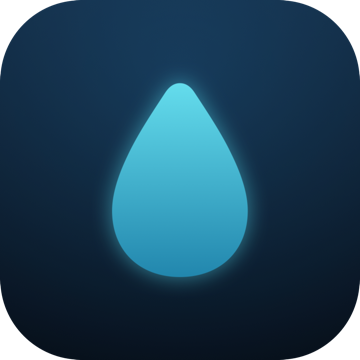

The friendly water tracker that lives in your Mac menu bar. Stay hydrated with gentle reminders, streaks, and clear insights — privately.
Log a glass straight from the menu bar. Custom drinks, containers, and caffeine tracking included.
Time-aware nudges within your active hours, plus a “don’t break your streak” guard.
See your week and month at a glance, keep streaks alive, and export to CSV anytime.
No account, no tracking, no data collected. Everything stays on your Mac.
Need help, found a bug, or have a feature idea? We’d love to hear from you.